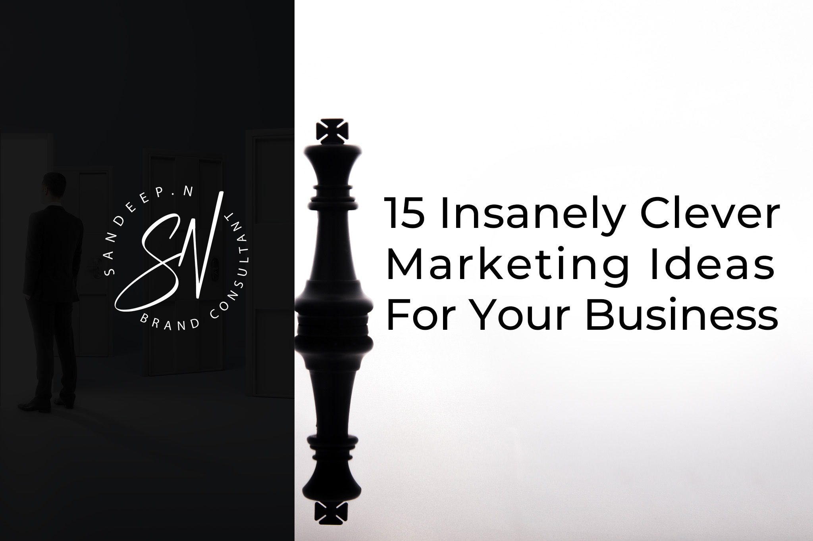

Introduction
Marketing is more than just promoting products or services; it's about connecting with your audience in meaningful ways. Clever marketing ideas can help your business stand out, foster customer loyalty, and ultimately drive sales. In this article, we explore 15 innovative marketing strategies designed to boost your business's visibility and success.
1. Utilize Social Media Influencers
Influencer marketing has become a powerful tool for brands looking to reach new audiences. By partnering with social media influencers who resonate with your target market, you can leverage their reach and credibility to promote your products.
Finding the Right Influencers
Finding the right influencers involves identifying individuals whose followers align with your target audience. Use tools like BuzzSumo or HypeAuditor to research influencers based on engagement rates and follower demographics.
Crafting Influencer Campaigns
Develop clear goals for your influencer campaigns, whether it's brand awareness, lead generation, or sales. Collaborate with influencers to create authentic content that highlights your product's benefits and fits naturally into their feed.
2. Leverage User-Generated Content
User-generated content (UGC) is a goldmine for businesses. It not only provides social proof but also engages your audience by involving them in your brand story.
Encouraging UGC
Encourage your customers to share their experiences with your products on social media. Create unique hashtags and run campaigns that prompt users to post photos, videos, or reviews.
Showcasing Customer Stories
Feature user-generated content on your website, social media pages, and marketing materials. This not only validates your product but also builds a community around your brand.
3. Run Creative Contests and Giveaways
Contests and giveaways are excellent for boosting engagement and attracting new followers. They create excitement and provide a fun way for customers to interact with your brand.
Contest Ideas
Consider photo contests, caption contests, or simple giveaways where users enter by liking, sharing, or tagging friends. Ensure the prizes are relevant to your audience to maximize participation.
Promoting Contests Effectively
Promote your contests through social media, email newsletters, and your website. Use eye-catching visuals and compelling calls to action to draw attention.
4. Implement a Referral Program
Referral programs leverage your existing customer base to gain new customers. They reward your customers for spreading the word about your business.
Designing Referral Programs
Design a referral program that is easy to understand and participate in. Offer attractive incentives for both the referrer and the new customer, such as discounts, free products, or cash rewards.
Incentives for Referrals
Incentives are key to a successful referral program. Ensure the rewards are significant enough to motivate your customers to refer their friends and family.
5. Create Engaging Video Content
Video content is engaging and can convey your brand message more effectively than text or images alone. It captures attention and can be used across various platforms.
Types of Video Content
Create different types of videos, such as product demonstrations, customer testimonials, behind-the-scenes footage, and how-to guides. Tailor the content to suit your audience's preferences.
Video Marketing Platforms
Use platforms like YouTube, Instagram, Facebook, and TikTok to distribute your video content. Optimize your videos for each platform to maximize reach and engagement.
6. Host Webinars and Live Streams
Webinars and live streams are excellent for building authority in your industry and engaging with your audience in real-time. They offer a platform to share knowledge and answer questions directly.
Planning Webinars
Plan your webinars by selecting relevant topics that address your audience's pain points. Promote them well in advance and ensure you have a seamless technical setup.
Engaging Your Audience
Engage your audience during webinars with interactive elements like polls, Q&A sessions, and live chat. This keeps attendees interested and encourages participation.
7. Use Email Marketing Automation
Email marketing remains one of the most effective ways to reach your audience. Automation tools can help you personalize your emails and send timely, relevant content.
Personalization in Email
Personalize your emails by addressing recipients by name and tailoring content to their interests and behaviors. Use segmentation to send targeted messages to different customer groups.
Drip Campaigns
Set up drip campaigns to nurture leads through the sales funnel. Automated sequences of emails can guide potential customers from awareness to decision-making stages.
8. Optimize for Local SEO
Local SEO helps businesses attract customers in their geographical area. It's essential for businesses that rely on local clientele, such as restaurants, shops, and service providers.
Local Listings
Ensure your business is listed on local directories like Google My Business, Yelp, and TripAdvisor. Keep your information up to date and encourage satisfied customers to leave reviews.
Geo-Targeted Ads
Use geo-targeted ads on platforms like Google Ads and Facebook to reach potential customers in specific locations. Customize your ad copy and offers based on local trends and needs.
9. Develop a Content Marketing Strategy
Content marketing involves creating valuable, relevant content to attract and engage your audience. It builds trust and positions your brand as an authority in your industry.
Blog Posts
Write informative blog posts that address your audience's questions and concerns. Use SEO best practices to ensure your content ranks well in search engines.
E-books and Whitepapers
Offer in-depth content like e-books and whitepapers in exchange for contact information. This helps generate leads while providing valuable resources to your audience.
10. Invest in Paid Advertising
Paid advertising can quickly drive traffic and generate leads. It allows you to target specific audiences and measure the effectiveness of your campaigns.
PPC Advertising
Pay-per-click (PPC) advertising on platforms like Google Ads can place your business at the top of search results. Use keyword research to select high-intent keywords that attract qualified leads.
Social Media Ads
Social media ads on platforms like Facebook, Instagram, and LinkedIn offer robust targeting options. Experiment with different ad formats, such as carousel ads, video ads, and sponsored posts.
ROI Tracking
Track the return on investment (ROI) of your paid advertising campaigns to ensure they are cost-effective. Use analytics tools to monitor performance and make data-driven decisions.
11. Collaborate with Other Brands
Brand collaborations can expand your reach and introduce your business to new audiences. By partnering with complementary brands, you can create mutually beneficial marketing campaigns.
Finding Partners
Identify brands that share your target audience but are not direct competitors. Reach out to them with collaboration ideas that provide value to both parties.
Co-Marketing Campaigns
Co-marketing campaigns can include joint product launches, co-branded content, or shared events. Promote the collaboration across both brands' marketing channels to maximize exposure.
12. Offer Limited-Time Promotions
Limited-time promotions create a sense of urgency and can drive quick sales. They entice customers to make a purchase before the offer expires.
Flash Sales
Flash sales offer significant discounts for a short period. Promote them through email, social media, and your website to create buzz and encourage fast action.
Exclusive Offers
Provide exclusive offers to loyal customers or members of your email list. This rewards their loyalty and encourages repeat purchases.
13. Build a Strong Online Community
An online community can foster brand loyalty and provide a platform for customer engagement. It allows customers to connect with each other and your brand on a deeper level.
Online Forums
Create online forums or discussion boards where customers can share their experiences, ask questions, and provide feedback. Monitor these spaces to facilitate positive interactions.
Social Media Groups
Develop social media groups on platforms like Facebook or LinkedIn. These groups can serve as a space for customers to engage with your brand and each other, sharing tips, advice, and experiences.
14. Utilize Chatbots for Customer Service
Chatbots can enhance customer service by providing instant responses to inquiries. They can handle routine questions, freeing up human agents for more complex issues.
Benefits of Chatbots
Chatbots are available 24/7, providing immediate assistance to customers. They can also handle multiple conversations simultaneously, improving efficiency.
Implementation Tips
Implement chatbots on your website and social media pages. Ensure they are programmed to handle common questions and provide a seamless handoff to human agents when needed.
15. Conduct Market Research
Market research helps you understand your customers' needs and preferences. It provides insights that can inform your marketing strategies and improve your offerings.
Customer Surveys
Use customer surveys to gather feedback on products, services, and customer experiences. This data can help you identify areas for improvement and new opportunities.
Competitive Analysis
Analyze your competitors to understand their strengths and weaknesses. Use this information to differentiate your brand and capitalize on market gaps.
FAQs
What are the benefits of using social media influencers? Social media influencers can significantly expand your reach and lend credibility to your brand. Their followers trust their recommendations, making influencer endorsements highly effective.
How can user-generated content improve my marketing efforts? User-generated content provides social proof and increases engagement. It showcases real customers using your products, which can build trust and attract new customers.
What are some effective ways to promote contests and giveaways? Promote contests and giveaways through social media, email newsletters, and your website. Use eye-catching visuals and clear calls to action to maximize participation.
Why is email marketing still relevant in today's digital landscape? Email marketing allows for personalized communication and has a high return on investment. It enables you to reach your audience directly and nurture leads through the sales funnel.
How can I optimize my local SEO strategy? Optimize your local SEO by listing your business on local directories, encouraging customer reviews, and using geo-targeted ads. Ensure your business information is accurate and up-to-date.
What are the advantages of using chatbots for customer service? Chatbots provide immediate responses and can handle multiple inquiries simultaneously. They improve customer satisfaction by offering quick assistance and freeing up human agents for more complex issues.
"A strong brand is not just about logos and colors; it's about the emotions and trust you create in the minds of your customers. Focus on delivering value, and your brand will speak for itself."
Conclusion
Clever marketing ideas can set your business apart and drive significant growth. From leveraging social media influencers to conducting thorough market research, these strategies are designed to boost your visibility and success. By implementing these innovative tactics, you can connect with your audience in meaningful ways and achieve your business goals.